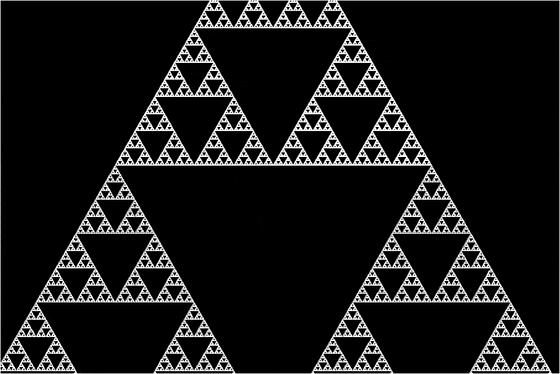

Zoom in of the Mandelbrot set
Go to wiki

Sierpiński triangle
Go to wiki
A strange attractor that exhibits multifractal scaling
Go to wikiFractals :
What is a Fractal?
Fractals are infinitely complex patterns that are self-similar across different scales. They are created by repeating a simple process over and over in an ongoing feedback loop. Driven by recursion, fractals are images of dynamic systems – the pictures of Chaos.
Fractals help us study and understand important scientific concepts, such as the way bacteria grow, patterns in freezing water (snowflakes) and brain waves, cancer research.
The Following video will clear the concept of What is a Fractal?
Fractal Dimensions:
In fractal geometry, the fractal dimension D is a statistical quantity that gives an indication of how completely a fractal appears to fill space, as one zooms down to finer and finer scales.